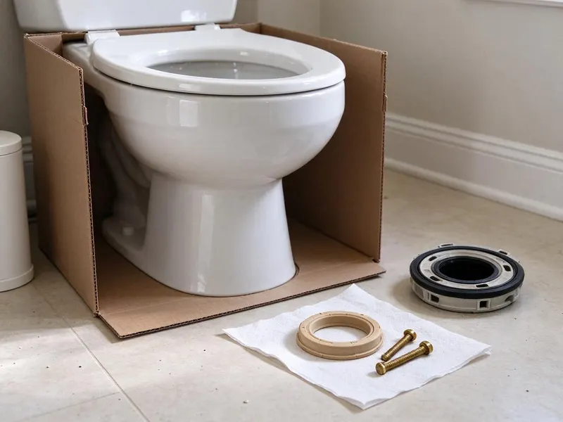

Sink Installation in Corpus Christi, TX
Looking for reliable sink installation in Corpus Christi, TX? DFJ Plumbing offers expert plumbing for all types of residential and commercial sinks.
- Fast, Local Plumbers
- Upfront Pricing
- Licensed & Insured
- Texas Plumbing Experts
Ready for a New Sink in Your Home in Corpus Christi, TX?
Get a free estimate today and experience the DFJ Plumbing difference for your next plumbing project.
Professional Sink Installation Services in Corpus Christi, TX
At DFJ Plumbing, we understand that a properly installed sink is crucial for both aesthetics and functionality. We handle all types of installations, from simple drop-ins to complex undermount and wall-mounted units, ensuring every connection is watertight and durable for Corpus Christi properties.
Our expertise includes:
- Precision fitting for all sink types
- Expert drain and faucet connections
- Compliance with Texas plumbing codes

Additional Bathroom Plumbing Services in Corpus Christi, TX
From toilets to showers, our bathroom plumbing team in Corpus Christi, TX repairs, installs, and replaces every fixture with clean, code-compliant work.


Customers
Why Choose DFJ Plumbing for Sink Installation in Corpus Christi, TX?
Choosing DFJ Plumbing for your sink installation means you are getting top-tier plumbing expertise from a local company. We focus on durable solutions that stand up to the unique demands of Corpus Christi homes.
- Local Expertise, We understand the specific plumbing requirements and water conditions in Corpus Christi, TX.
- Quality Workmanship, Our installations are always precise and up to the highest industry standards, preventing future issues.
- Transparent Pricing, You will receive a clear, upfront quote with no hidden fees for your sink installation project.
Citywide Coverage
DFJ Plumbing is proud to serve every neighborhood in Corpus Christi, providing expert sink installation services wherever you are located. We know the local infrastructure and can quickly dispatch a plumber to your address.
Experienced Team
Our plumbing team has extensive experience with all major sink brands and installation methods, ensuring a professional job every time. They are continuously trained on the latest techniques and local plumbing codes specific to Texas.
Safety-First Approach
Our meticulous approach prevents common issues like leaks, water damage, and improper drainage, safeguarding your home's integrity and your family's health.
Trusted Certified Corpus Christi Plumbing Services Professionals
At DFJ Plumbing, we take pride in providing certified plumbing services throughout Corpus Christi, TX. Backed by leading industry credentials, our experienced plumbers combine technical skill with genuine customer care. Whether it is repair, installation, or maintenance, we follow strict safety and quality standards to deliver lasting results you can trust.
Call Us Now PHCC Plumbing Contractor Recognition
PHCC Plumbing Contractor Recognition Better Business Bureau (BBB) Accreditation
Better Business Bureau (BBB) Accreditation Angi Certified Pro
Angi Certified Pro ISO 9001 Quality Management Certification
ISO 9001 Quality Management CertificationReliable Sink Installation Services in Corpus Christi, TX
Kitchen Sink Installation in Corpus Christi
The kitchen sink is a high-traffic area, and a proper installation is key to its longevity and function. We install all types of kitchen sinks, including undermount, drop-in, farmhouse, and bar sinks. Our team ensures correct alignment with countertops, secure mounting, and watertight connections for both the drain and supply lines. We also connect garbage disposals and dishwashers seamlessly during the installation process, adhering to all Texas plumbing codes.

Bathroom Sink Installation in Corpus Christi, TX
Upgrading your bathroom often starts with a new sink. We handle installations for pedestal sinks, vessel sinks, console sinks, and integrated vanity sinks. Our plumbers ensure the new sink fits perfectly with your vanity or wall mounting, providing secure fastenings and precise plumbing connections. We pay close attention to drain assembly and faucet integration, making sure everything is sealed and functions flawlessly, which is especially important in humid Texas bathrooms.
Utility Sink Installation in Corpus Christi
Utility sinks in laundry rooms, garages, or workshops need to be robust and correctly installed to handle heavy use. DFJ Plumbing installs durable utility sinks, ensuring strong support for the basin and proper drainage for large volumes of water. We address potential issues like hard water buildup common in some parts of Texas by ensuring robust connections and appropriate P-traps that can be easily maintained.
Commercial Sink Installation in Corpus Christi, TX
For businesses in Corpus Christi, we provide specialized commercial sink installation for kitchens, restrooms, and industrial applications. This includes multi-compartment sinks, handwashing stations, and specialized fixtures that meet health department regulations and commercial plumbing standards. Our installations are designed for durability and high-volume use, minimizing downtime for your business operations.
Undermount Sink Installation in Corpus Christi
Undermount sinks offer a sleek look and are popular for their easy-to-clean design. Their installation requires precise cutting of countertops and secure mounting from underneath. Our plumbers are experts in creating watertight seals and using appropriate clips and adhesives to ensure the sink is firmly in place, preventing future sagging or leaks, a crucial step given the expansive clay soils in many Texas areas that can affect foundation stability over time.
Faucet & Drain Assembly for New Sinks in Corpus Christi, TX
A new sink installation often includes new faucets and drain assemblies. We meticulously install all components, from single-handle to widespread faucets, and ensure proper P-trap and drain connections. We work with all major brands like Moen, Delta, Kohler, and Pfister, guaranteeing compatibility and efficient water flow. Our attention to detail prevents common post-installation issues like slow drains or drips.
Emergency Sink Replacement in Corpus Christi
If an old sink has failed catastrophically, causing leaks or water damage, DFJ Plumbing offers emergency sink replacement services. We can quickly remove the damaged unit and install a new sink to restore functionality and prevent further issues. Our rapid response team in Corpus Christi is equipped to handle urgent situations, ensuring your home or business is protected.

Sink Installation Cost Comparison in Corpus Christi, TX
The cost of sink installation varies based on sink type, complexity of the job, and any necessary modifications to plumbing or countertops. DFJ Plumbing provides clear, upfront pricing after a thorough assessment. We aim to offer competitive rates for high-quality work, ensuring you receive excellent value for your investment in your Corpus Christi, TX home. We help you understand the factors influencing the total cost.
Sink Installation Near Me in Corpus Christi, TX
When you search for 'sink installation near me' in Corpus Christi, TX, DFJ Plumbing is your local, reliable choice. Our team is strategically located to provide prompt service across the entire Corpus Christi metropolitan area. We understand the specific plumbing needs of homes and businesses in our community.
We pride ourselves on being the go-to plumbing experts for new sink installations. Whether you are in a historic home or a new build, our local plumbers are ready to deliver efficient and professional service right to your doorstep.
DFJ Plumbing at a Glance
- Fully licensed plumbing team covering Corpus Christi, TX
- Same-day appointments and 24/7 emergency response
- Clear written estimates, no hidden fees
- 4.9-star rated by 812+ Texas customers
Corpus Christi Map
Corpus Christi Information
- Population
- 316,595
- Area codes
- 361/430/364
- Service area
- Corpus Christi and communities within 40 miles
- Nearby
- Victoria, Harlingen, Edinburg, Brownsville
Proper sink installation is vital for homes in Corpus Christi, TX, especially with Texas's hard water and expansive clay soils that can stress plumbing connections over time.
Expert Services
Trust our professionals for reliable DFJ Plumbing solutions in Corpus Christi, TX.
Our Specialized Plumbing Services in Corpus Christi, TX
At DFJ Plumbing, we provide a complete range of plumbing services across Corpus Christi, TX. From leak detection to full system installations, our team ensures fast, precise, and affordable service for both residential and commercial properties. Explore our core services below:


How Our Sink Installation Process Works in Corpus Christi, TX
Our sink installation process at DFJ Plumbing is designed to be straightforward and stress-free for our Corpus Christi customers.
Request a Quote
Contact DFJ Plumbing today by calling (737) 405-5978 to discuss your sink installation needs. We will gather initial details and schedule a convenient time for an on-site assessment.
On-Site Assessment
A certified plumber will visit your Corpus Christi property to evaluate the existing plumbing, measure for the new sink, and provide a detailed, transparent quote.
Professional Installation
Our team will expertly remove your old sink, prepare the area, and meticulously install your new sink, including all necessary plumbing and fixtures.
Frequently Asked Questions About Sink Installation in Corpus Christi
The cost for sink installation in Corpus Christi, TX typically ranges from $200 to $600 for labor alone, depending on the sink type (e.g., drop-in vs. undermount), complexity, and if any modifications to existing plumbing or countertops are needed. This does not include the cost of the sink itself. We provide a detailed, upfront quote after an on-site assessment.
Most standard sink installations can be completed within 2 to 4 hours, assuming no major plumbing modifications are required. More complex installations, such as those requiring new water lines or drain rerouting, might take longer. We will give you an estimated timeframe during our initial assessment.
To prepare for your sink installation, please clear out the cabinet beneath the sink and ensure easy access to the work area. If you are supplying the new sink, have it readily available for our plumbers. Clearing the space helps our team work efficiently and safely.
Signs you may need a new sink include extensive cracking or chipping, widespread rust, persistent leaks that cannot be sealed, significant water damage around the sink basin, or if you are upgrading your home's aesthetics. Small leaks or minor clogs can often be repaired, but widespread damage usually warrants replacement.
DFJ Plumbing stands behind our work with a comprehensive labor warranty on all sink installations. This covers any issues directly related to our installation for a specified period. The warranty on the sink fixture itself will be provided by the manufacturer. We will explain all warranty details before beginning any work.
DFJ Plumbing can install a wide variety of sinks, including kitchen sinks (undermount, drop-in, farmhouse, bar), bathroom sinks (pedestal, vessel, console, integrated), and utility sinks. We handle installations for all standard residential and commercial applications.
We work with all reputable brands for sinks and faucets, including but not limited to Kohler, Moen, Delta, American Standard, Elkay, and Pfister. Our plumbers are experienced in installing fixtures from any major manufacturer to ensure compatibility and proper function.
You can either purchase the sink yourself, or we can assist you in selecting and sourcing one from our trusted suppliers. Many customers prefer to choose their own sink to match their aesthetic, but we are happy to recommend durable, high-quality options suitable for Corpus Christi homes.
What People Are Saying About Our Plumbing Experts?

Patricia H.
We had a slab leak that two other companies could not find. DFJ Plumbing located it in under an hour, explained our options, and the price matched the quote to the dollar.
Slab Leak Repair · Harlingen, TX
Emily R.
I called DFJ Plumbing for plumbing repair, and the technician was fast, polite, and thorough. They explained the problem clearly and fixed it the same day. I will definitely hire them again. Highly recommended!
Plumbing Repair · Brownsville, TX
James P.
Our commercial plumbing system had a leak under the sink, and DFJ Plumbing handled it professionally. The plumbers arrived quickly and restored everything without disruption to our customers.
Commercial Plumbing · Edinburg, TX
Mark T.
When our office needed drain cleaning, DFJ Plumbing provided quick, reliable service. The plumber arrived on time and made sure every drain flowed perfectly before leaving. Very satisfied.
Drain Cleaning · Brownsville, TXRobert G.
The trenchless sewer replacement saved our front yard. They walked us through the camera inspection footage first so we knew exactly what we were paying for.
Sewer Line Replacement · Victoria, TX
Sofia M.
Two new toilets installed in one visit, no mess left behind, and the tech even adjusted a faucet he noticed was dripping. Fair pricing and really friendly.
Toilet Installation · Harlingen, TX